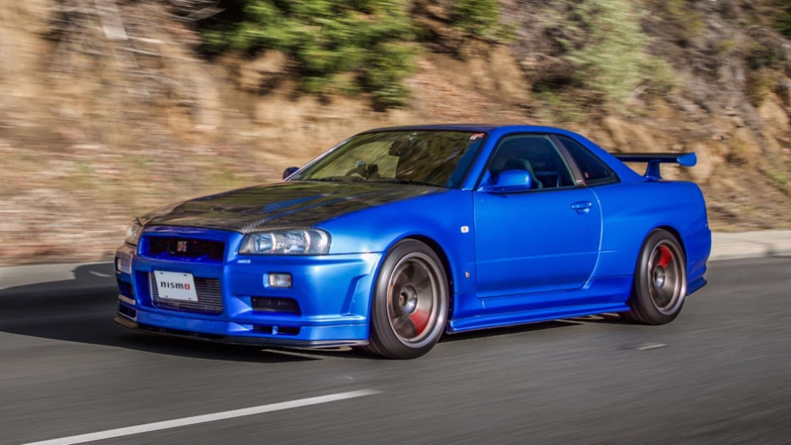

 We are looking at one of the most popular JDM car on the market. This is the Nissan Skyline GT-R R34. It was made famous because it was used by Paul Walker in the film "2 Fast 2 Furious." The GT-R is a very popular car for JDM enthusiasts. It is powered by the RB26DETT engine, with a six-speed manual transmission. The car was very limited, only 11,578 cars were produced. With some of them being a special edition, which makes the very rare.